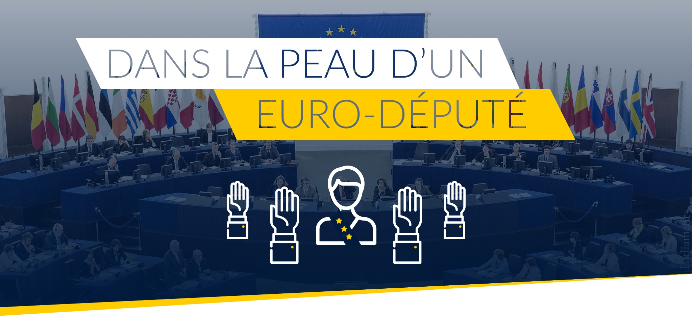
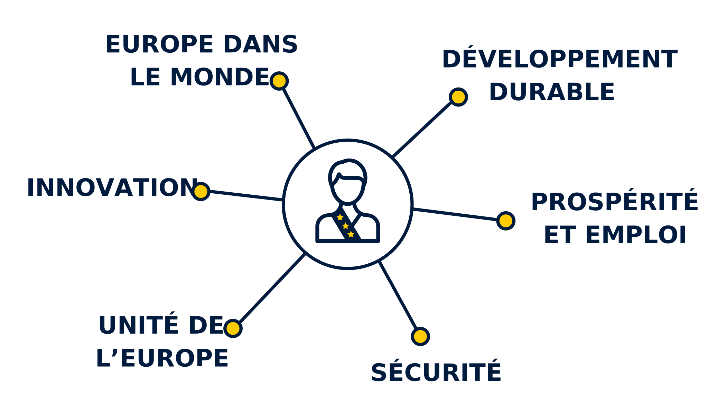
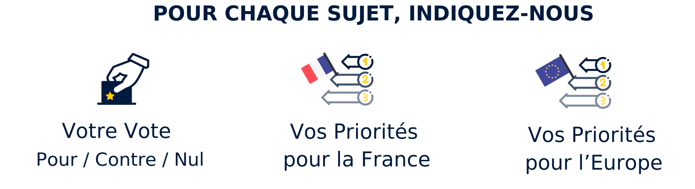
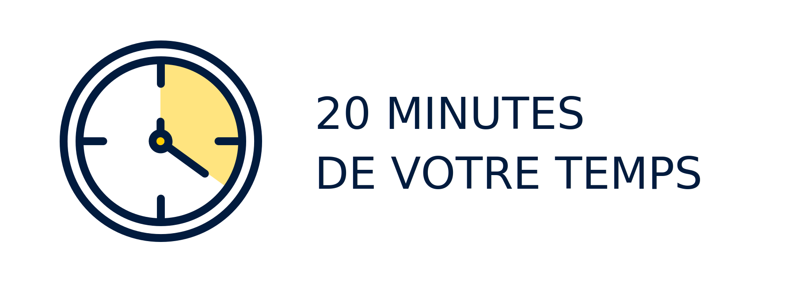

<link rel="stylesheet" href="./styles/main.css" />

<section id="welcome">
	<center style="margin: -20px -40px 0;"></center>
	Pendant les 20 prochaines minutes, mettez-vous dans la peau d’un euro-député en répondant à cette consultation citoyenne…
	
	<h2>21 Textes, 6 Thématiques</h2>

	Lors de son discours de la Sorbonne, le Président de la République a évoqué 6 grandes thématiques pour refonder notre projet européen.
	<center></center>
	
	Nous avons identifier un ou plusieurs textes majeurs ayant été voté par le Parlement Européen pour chacune de ces thématiques.<br>
	<i>Ce sont ces textes que nous allons soumettre à votre opinion...</i>
	
	
	<h2>Et vous, qu'en pensez-vous ?</h2>

	Pour chaque sujet, nous allons tout d'abord vous présenter rapidement le contexte et les enjeux du texte.
	En bas de chaque présentation, un lien vous permettra de rentrer plus dans le détail à l'aide d'une synthèse préparée par notre équipe.
	
	Enfin, nous vous demanderons quel aurait été votre vote ainsi que votre opinion sur l'aspect prioritaire de ce texte pour la France et pour l'Europe.

	<center></center>
	
	Notre équipe a fait de son mieux pour résumer au mieux chaque sujet et vous donner la possibilité d'approfondir chaque sujet selon votre temps et votre envie.

	<center></center>

	Grâce à cet important travail de synthèse, cette consultation citoyenne ne devrait pas excéder 20 minutes de votre temps.

	<p>
		<a class="button" onclick="Quizz.next()">Passer à la suite</a>
	</p>
</section>

<section id="informations">
	<h1>Mieux vous connaître</h1>

	<center>
		<br>
		Avant de commencer et afin de mieux vous connaitre, indiquez-nous votre lien avec LaREM…
	</center>

	<select name="age" required>
		<option selected disabled value="">Quel est votre âge ?</option>
		<option value="0-18">moins de 18 ans</option>
		<option value="18-25">de 18 à 25 ans</option>
		<option value="26-59">de 26 à 59 ans</option>
		<option value="60-79">de 60 à 79 ans</option>
		<option value="80-120">80 ans ou plus</option>
	</select>

	<select name="job" required>
		<option selected disabled value="">Quel est votre métier ?</option>
		<option value="etudiant">étudiant</option>
		<option value="ouvrier">ouvrier</option>
		<option value="employe">employé</option>
		<option value="cadre">cadre</option>
		<option value="sans emploi">sans emploi</option>
		<option value="retraite">retraité</option>
		<option value="autre">autre</option>
	</select>

	<select name="membership" required>
		<option selected disabled value="">Êtes-vous adhérent(e) à LaREM ?</option>
		<option value="adherent">OUI, simple adhérent</option>
		<option value="marcheur">OUI, marcheur actif</option>
		<option value="referent">OUI, référent départemental</option>
		<option value="elu">OUI, élu de LaREM</option>
		<option value="autre">OUI, autre</option>
		<option value="non">NON</option>
	</select>

	<p>
		<a class="button" onclick="Quizz.next()">Débuter le Questionnaire</a>
	</p>
</section>

<section id="question">
	<center style="margin: 2em 0 -1.5em 0">
		<div id="thematique">THÉMATIQUE</div>
	</center>
	<h1 id="title">Titre</h1>

	<h2>30 secondes pour comprendre</h2>
	<div class="table">
		<div id="contexte" class="cell"></div>
		<div id="chronologie" class="cell"></div>
		<div id="recommandations_etats" class="cell"></div>
		<div id="recommandations_commission" class="cell"></div>
	</div>

	<a href="" id="wiki" target="_blank">Vous souhaitez approfondir le sujet ?<br>Cliquez ici pour consulter notre documentation !</a>

	<h2>Et vous, qu'en pensez-vous ?</h2>

	<h3>Qu'auriez-vous voté ?</h3>

	<div style="text-align: center; padding: 1em 0;">
		<div id="vote">
			<input type="radio" name="vote" id="vote_1" value="1">
			<label for="vote_1"></label>

			<input type="radio" name="vote" id="vote_0" value="0" checked>
			<label for="vote_0"></label>

			<input type="radio" name="vote" id="vote_-1" value="-1">
			<label for="vote_-1"></label>
		</div>
	</div>
		
	<h3>Est-ce un sujet prioritaire pour <b>la France</b> ?</h3>

	<div id="priorite_france" style="text-align: center; padding: 1em 0;">
		<span>Superflu</span>
		<span class="choice"></span>
		<span>Essentiel</span>
	</div>
		
	<h3>Est-ce un sujet prioritaire pour <b>l'Union Européenne</b> ?</h3>

	<div id="priorite_europe" style="text-align: center; padding: 1em 0;">
		<span>Superflu</span>
		<span class="choice"></span>
		<span>Essentiel</span>
	</div>

	<p>
		<a class="button" onclick="Quizz.next()">Question suivante</a>
	</p>
</section>

<section id="resultats" style="text-align: center;">
	<h1>Merci de votre Contribution !</h1>

	<h2>Quel Euro-Député(e) êtes-vous ?</h2>

	Voici un des Euro-Députés de la mandature en cours qui partage vos choix de vote :

	<div id="score"></div>

	<div class="mep">
		<div class="block">
			<a href="" id="link" target="_blank" style="display: block; text-align: center">
				<div id="face" style="margin: 1em auto; width: 100px; height: 100px; border-radius: 100px; background-size: contain; background-position: center; background-repeat: no-repeat; background-color: #fff; box-shadow: 0 0 10px #0003"></div>
				<div id="flag" style="
				top: -2.5em;
				left: 2.5em;
				margin: 0 auto -1.5em;
				position: relative; width: 30px; height: 20px; border-radius: 20px; background-size: cover; background-position: center; background-repeat: no-repeat; background-color: #fff; box-shadow: 0 0 10px #0003"></div>
				<div id="name"></div>
				<div id="code"></div>
			</a>

		</div>
		<div class="block">
			<div id="securite" class="score" data-name="SÉCURITÉ" data-width="40%"></div>
			<div id="environnement" class="score" data-name="ENVIRONNEMENT" data-width="13%"></div>
			<div id="innovation" class="score" data-name="INNOVATION" data-width="80%"></div>
			<div id="monde" class="score" data-name="MONDE" data-width="30%"></div>
			<div id="prosperite" class="score" data-name="PROSPERITÉ" data-width="30%"></div>
			<div id="unite" class="score" data-name="UNITÉ" data-width="30%"></div>
		</div>
	</div>
	
	<a href="#subscribe" class="button">Vous souhaitez adhérer à EEM ?</a>

	<h2>Consultation sur l'Avenir de l'Europe</h2>

	<a href="https://ec.europa.eu/consultation/runner/Future-of-Europe?surveylanguage=fr" id="wiki" target="_blank">Cliquez ici pour accéder aux<br><b>Consultation sur l’avenir de l’Europe</b> !</a>
	<br>
</section>

<ul id="progress"></ul>

<script src="./scripts/main.js"></script>
